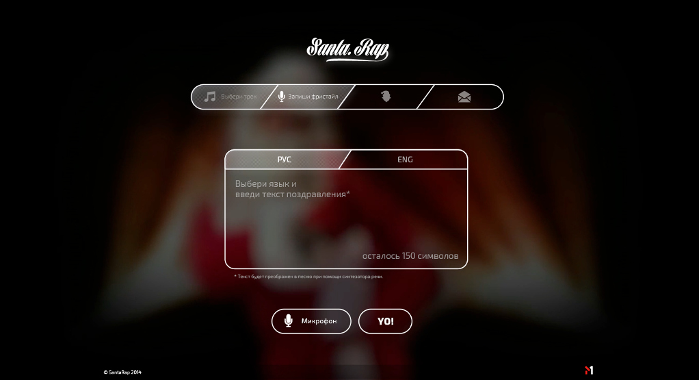
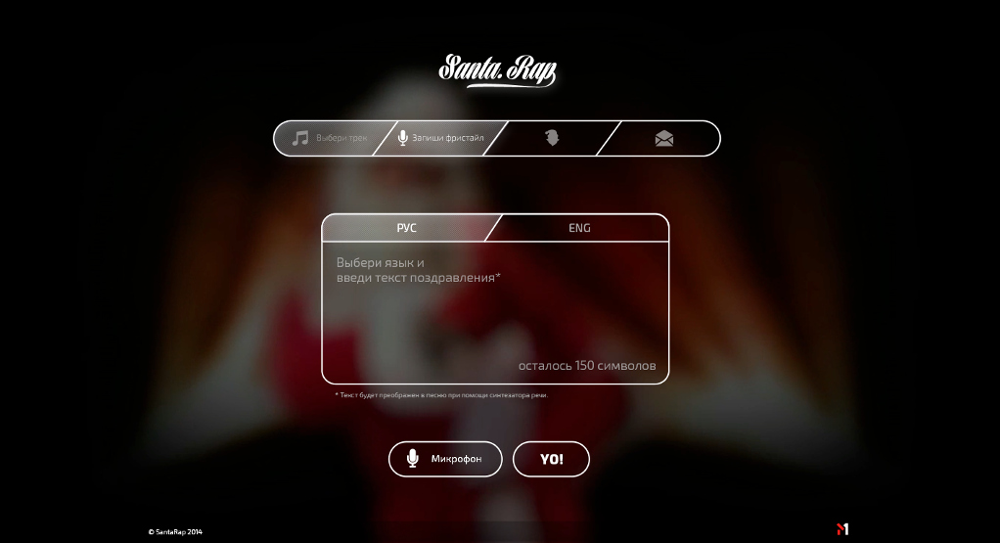
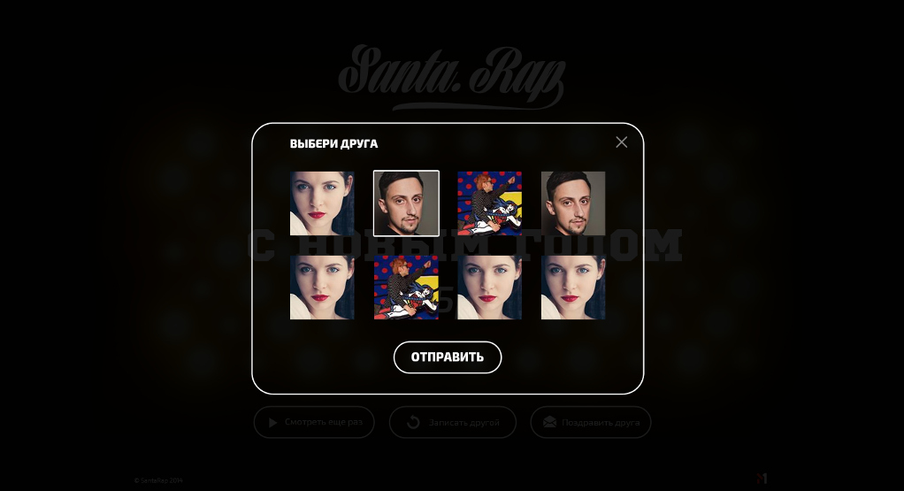
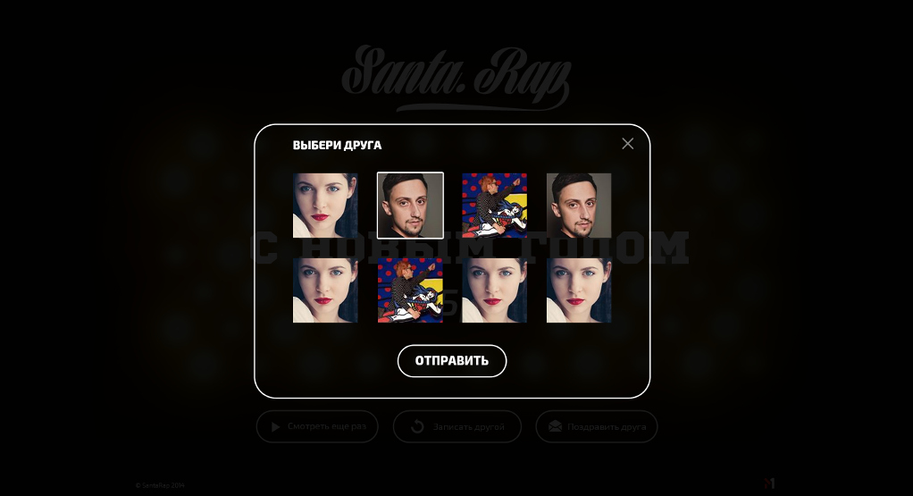

Santa Rap
interaktywna pocztówka
Klient: Music TV chanel M1
interaktywna pocztówka
http://santa-rap.com/

 


 
Zadanie
Oferować widzą muzycznego telewizyjnego kanała M1 możliwość oryginalne pogratulować przyjaciół z sylwestrem. Realizacja — Zrobiliśmy interaktywną pocztówkę żeby użytkownik mógłby zaśpiewać swoją gratulację i przesłać ją swoim przyjacielam.
Obrawszy jedną z dwoch melodii użytkownik może nakręcić śpiew, stworzyć video i otrzymać oryginalną pocztówkę. Również została zrealizowana możliwość drukowania tekstu gratulacji na klawiaturę, z dopomogą syntezatora mowy tekst zostanie przetworzony na dźwięk.
Po stronie serwera oprogramowanie zrealizowałem na pytonie. Dźwięk przetwarzany za pomocy biblioteki SOX i vokodera, a jako syntezator mowy wykorzystałem tłumacz google i espeak jako wariant zapasowy.
Projekt został wykonany korzystając z technologii HTML5 (Backbone)